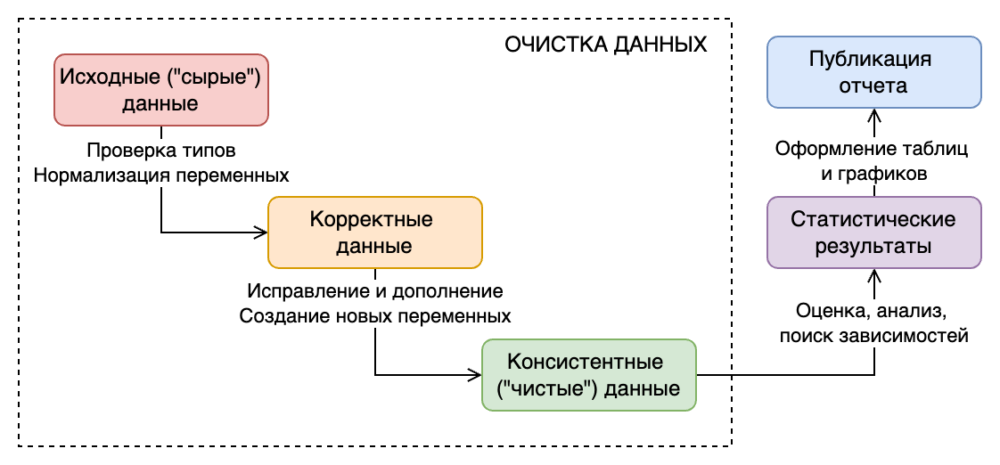
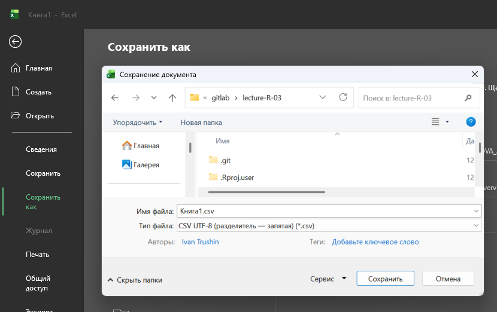
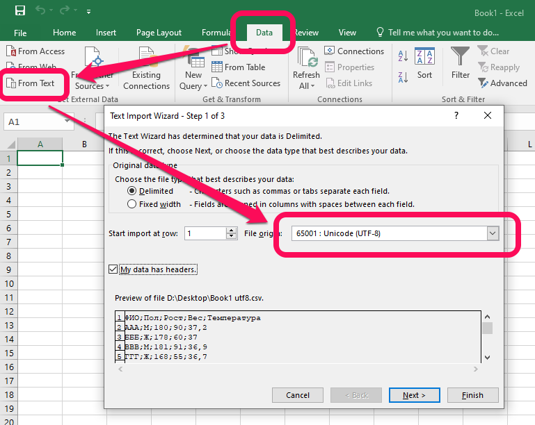
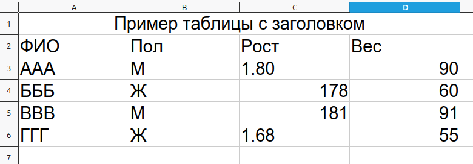
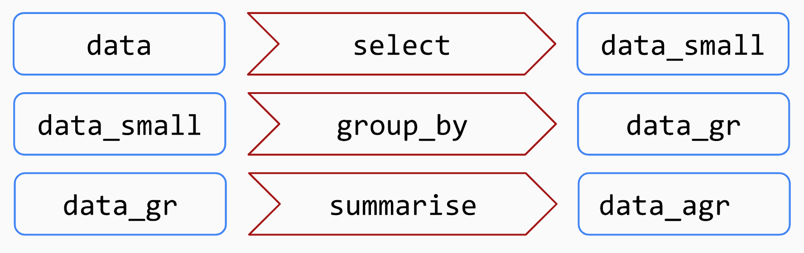

ФИО | Пол | Рост | Вес | Температура |
|---|---|---|---|---|
AAA | М | 180 | 90 | 37.2 |
БББ | Ж | 178 | 60 | 37.0 |
ВВВ | М | 181 | 91 | 36.9 |
ГГГ | Ж | 168 | 55 | 36.7 |
Особенности подготовки табличных данных
Трушин Иван Витальевич
младший научный сотрудник
НИИ антимикробной химиотерапии
ФГБОУ ВО СГМУ Минздрава России
🙋♂️ Проверка связи
Если слышно/видно поставьте в чат плюс +
🎯 Цели занятия
- Узнать, какие таблицы наиболее подходят для обработки
- Научиться “готовить” нормализованные таблицы
- Изучить основные приемы работы с различными типами данных
- Разобрать два подхода взаимодействия с таблицами:
dplyr,data.table - Сохранить результат нашей работы
1️⃣ Подготовка данных
Процесс обработки данных
Корректные данные
- Плоская (нормализованная) таблица
- Таблица загружена в data.frame/tibble
- Каждая переменная записана в одном формате
- Отсутствуют пропущенные значения
- Тип данных каждой переменной адекватно отражает данные:
- числовые - numeric или integer,
- текстовые - character,
- категориальные - factor/character
- даты - datetime
- бинарные признаки - boolean
Нормализованные и агрегированные таблицы
Нормализованная форма (плоская) отображает:
- в строках - наблюдения,
- в столбцах - переменные,
- в ячейках - значения переменных
Агрегированная - отображает значения, которые являются результатом статистических операций, таких как сгруппированные итоговые значения, максимальные значения и т.д.
Пол | AVG.Рост | AVG.Вес | MAX.Температура |
|---|---|---|---|
М | 180.5 | 90.5 | 37.2 |
Ж | 173.0 | 57.5 | 37.0 |
Какой формат использовать для таблиц
Можно использовать Excel для заполнения, но для расчетов - текстовый.
Первая строка - заголовки столбцов, вторая и последующая строки - данные.
Самые популярные текстовые форматы для таблиц:
CSV
разделитель столбцов - запятая/точка с запятой
ФИО;Пол;Рост;Вес;Температура
AAA;М;180;90;37,2
БББ;Ж;178;60;37,0
ВВВ;М;181;91;36,9
ГГГ;Ж;168;55;36,7TSV
разделитель столбцов - табуляция
ФИО Пол Рост Вес Температура
AAA М 180 90 37.2
БББ Ж 178 60 37
ВВВ М 181 91 36.9
ГГГ Ж 168 55 36.7Лучше всего использовать CSV UTF-8.
Пример чтения данных из Excel и Csv
Как сохранить в CSV
Как отредактировать CSV в Excel
Рекомендации по подготовке таблиц для чтения в R
- В первой строке таблицы должны располагаться названия столбцов.
- Во второй строке таблицы должны начинаться данные.
- Не используйте многострочные заголовки и объединения ячеек.
- Названия столбцов должны состоять из латинских букв и цифр, начинаться с буквы и не содержать пробелов.
- Сложносочиненные названия выделяйте прописными буквами или нижним подчеркиванием.
Требования Tidy Data для таблиц
- В строках таблицы - наблюдения (информация об одном исследуемом объекте)
- В столбцах - переменные (характеристики исследуемого объекта)
- Названия столбцов:
- Уникальные, регистрозависимые
- Не имеют спец.символов (&, #, <, >, …)
- Без пробелов (замените пробелы на нижние подчеркивания _ )
- Номенклатура в едином стиле (например, все столбцы с датами названы по принципу дата_заболевания, дата_регистрации,
- Содержат единицы измерения
- Данные в рамках столбца в одном формате (год из 4 цифр, рост в см, и т.д.)
- Должен быть столбец с уникальным идентификатором
Требования Tidy Data для таблиц

Как открыть файл Excel в R
Как открыть файл CSV в R
# Открыть файл CSV сохраненный с помощью Excel
data_test <- read.csv2("Book1.csv")
# Открыть файл CSV с кодировкой UTF-8
data_test <- read.csv2("Book1 utf8.csv",
encoding = "UTF-8")
# Открыть любой текстовый табличный файл
data_csv <-
read.table(
file = "Book1.csv",
header = TRUE,
sep = ";",
quote = '"',
na.strings = "",
stringsAsFactor = FALSE,
encoding = "Windows-1251"
)Преимущества пакета
readr: быстрая работа, корректное распознавания типов и пропущенных значений
Переименование столбцов стандартными средствами
[1] "№ истории болезни" "Пол" "Дата рождения" "Дата начала" "Рост"
[6] "Вес" "Завершил исследование" "Материал" "unique_id" # Переименование всех столбцов
colnames(df) <- c("case_history", "sex",
"date_birth", "data_start",
"height", "weight", "is_complete",
"material", "unique_id")
# Переименование одного столбца
names(df)[9] <- "id"
colnames(df)[1] "case_history" "sex" "date_birth" "data_start" "height" "weight" "is_complete" "material" "id" Переименование столбцов с janitor
# Ручная очистка имен
library(stringi)
names(df) <- stri_trans_general(names(df), "russian-latin/bgn") # транслитерируем
names(df) <- tolower(names(df)) # приводим в нижний регистр
names(df) <- gsub(" ", "_", names(df)) # заменяем пробелы на подчеркивания
names(df) <- gsub("[^[:alnum:]_]", "", names(df)) # удаляем все специальные символы
names(df)[1] "fio" "domadrec" "gotovnostʹ_" "nomer_telefona"Названия строк в столбцы

Удаление пустых строк и столбцов
ID Name Age Empty_Col
1 1 John 25 NA
2 2 Jane 30 NA
3 NA <NA> NA NA
4 4 <NA> NA NA
5 5 <NA> NA NAПоиск дублирующихся строк
ID Name Age
1 1 John 25
2 2 Jane 30
3 3 Doe 22
4 3 Doe 22
5 4 Alice 40
6 5 Bob 35
7 5 Bob 352️⃣ Работа с пропущенными данными
Поиск и замена пропущенных данных
id name sex age temp
1 1 AAA М 18 37.0
2 2 BBB Ж 20 NA
3 3 BBB <NA> NA 36.9
4 4 CCC М 34 37.2Замена пропущенных данных с tidyr
id name sex age temp
1 1 AAA М 18 37.0
2 2 BBB Ж 20 NA
3 3 BBB <NA> NA 36.9
4 4 CCC М 34 37.2Удаление строк с пропусками
id name sex age temp
1 1 AAA М 18 37.0
2 2 BBB Ж 20 NA
3 3 BBB <NA> NA 36.9
4 4 CCC М 34 37.23️⃣ Работа с датами
Корректное чтение
# A tibble: 3 × 2
date datetime
<chr> <chr>
1 11.03.2025 11.03.2025 11:45
2 12.03.2025 12.03.2025 10:05
3 13.14.2025 13.12.2025 16:76# Преобразование в дату
df$date_new <- as.Date(df$date, format = "%d.%m.%Y")
# Преобразование в дату и время
df$datetime_new <- as.POSIXct(df$datetime,
format = "%d.%m.%Y %H:%M")
df# A tibble: 3 × 4
date datetime date_new datetime_new
<chr> <chr> <date> <dttm>
1 11.03.2025 11.03.2025 11:45 2025-03-11 2025-03-11 11:45:00
2 12.03.2025 12.03.2025 10:05 2025-03-12 2025-03-12 10:05:00
3 13.14.2025 13.12.2025 16:76 NA NA Маски формата даты и времени
| Код | Описание | Пример |
|---|---|---|
| %a | Сокращенное название дня недели | Mon |
| %A | Полное название дня недели | Monday |
| %b | Сокращенное название месяца | Sep |
| %B | Полное название месяца | September |
| %m | Номер месяца (от 1 до 12) | 9 |
| %d | День месяца (от 1 до 31) | 28 |
| %y | Сокращенная форма год (00-99) | 13 |
| %Y | Полная форма года | 2013 |
| %H | Часы | 21 |
| %M | Минуты | 45 |
Корректное чтение с parsedate
# A tibble: 4 × 2
id date
<dbl> <chr>
1 1 april 15 2025
2 2 15/04/2025
3 3 04/15/2025
4 4 2025-04-15 Внимание
Могут возникать проблемы с распознаванием месяца
Корректное чтение с lubridate
# A tibble: 3 × 2
id date
<dbl> <chr>
1 1 04/04/2025
2 2 12/03/2025
3 3 03/12/2025library(lubridate)
df$date_1 <- dmy(df$date) # Если в начале стоит день
df$date_2 <- mdy(df$date) # Если в начале стоит месяц
df# A tibble: 3 × 4
id date date_1 date_2
<dbl> <chr> <date> <date>
1 1 04/04/2025 2025-04-04 2025-04-04
2 2 12/03/2025 2025-03-12 2025-12-03
3 3 03/12/2025 2025-12-03 2025-03-12Корректное чтение с janitor
# A tibble: 3 × 2
id date
<dbl> <chr>
1 1 2020-02-29
2 2 40000.1
3 3 42232 # Универсальная конвертация
df$date_new <- convert_to_date(df$date)
# Можно указать, как обрабатывать строковые даты
df$datetime_new <- convert_to_datetime(df$date,
character_fun = lubridate::ymd)
df# A tibble: 3 × 4
id date date_new datetime_new
<dbl> <chr> <date> <dttm>
1 1 2020-02-29 2020-02-29 2020-02-29 00:00:00
2 2 40000.1 2009-07-06 2009-07-06 02:24:00
3 3 42232 2015-08-16 2015-08-16 00:00:00Расчет длительности
На основе имеющихся дат можно вычислять новые даты, прибавляя и вычитая дни, часы, минуты, секунды, а также используя встроенные функции now() для получения текущего времени и today() для текущего дня.
Для рассчета длительности удобно использовать interval() из пакета lubridate.
# A tibble: 3 × 1
date
<date>
1 2020-02-29
2 2009-07-06
3 2015-08-16# День назад
df$day_before <- df$date - days(1)
# Возраст на сегодня
library(lubridate)
df$age <- interval(df$date, now()) / years(1)
df$age_int <- interval(df$date, now()) %/% years(1)
df$age_mon <- interval(df$date, now()) %/% months(1)
df# A tibble: 3 × 5
date day_before age age_int age_mon
<date> <date> <dbl> <dbl> <dbl>
1 2020-02-29 2020-02-28 5.71 5 68
2 2009-07-06 2009-07-05 16.4 16 196
3 2015-08-16 2015-08-15 10.3 10 1224️⃣ Работа с числами
Корректное чтение с readr
# Интерпретация значений/пропусков
x <- c("1", "2", "3", "-", "6", "-1", "7")
# При обычном парсинге будет предупреждение
parse_double(x)[1] 1 2 3 NA 6 -1 7
attr(,"problems")
# A tibble: 1 × 4
row col expected actual
<int> <int> <chr> <chr>
1 4 NA a double - # Чтобы скрыть предупреждение нужно задать
# какие значения считать NA
parse_double(x, na = c("-", ""))[1] 1 2 3 NA 6 -1 7[1] 1 2 3 NA 6 NA 7Преобразование единиц измерения
# A tibble: 4 × 4
ФИО Пол Рост Вес
<chr> <chr> <dbl> <dbl>
1 AAA М 1.8 90
2 БББ Ж 178 60
3 ВВВ М 181 91
4 ГГГ Ж 1.68 55# Приведем рост в сантиметры с помощью ifelse(условие, истина, ложь)
df$height_cm <- ifelse(df$Рост < 10, # Логическое условие
df$Рост * 100, # Значение, если ИСТИНА
df$Рост # Значение, если ЛОЖЬ
)
df# A tibble: 4 × 5
ФИО Пол Рост Вес height_cm
<chr> <chr> <dbl> <dbl> <dbl>
1 AAA М 1.8 90 180
2 БББ Ж 178 60 178
3 ВВВ М 181 91 181
4 ГГГ Ж 1.68 55 168Округление
val
1 1.00000
2 1.49000
3 1.50000
4 2.50000
5 2.55000
6 3.14159# Стандартные функции округления
# до целой части
df$round <- round(df$val)
# до второго знака после запятой
df$round_d <- round(df$val, 2)
# в большую сторону
df$ceiling <- ceiling(df$val)
# в меньшую сторону
df$floor <- floor(df$val)
df val round round_d ceiling floor
1 1.00000 1 1.00 1 1
2 1.49000 1 1.49 2 1
3 1.50000 2 1.50 2 1
4 2.50000 2 2.50 3 2
5 2.55000 3 2.55 3 2
6 3.14159 3 3.14 4 3# Округление с janitor
library(janitor)
# до целой части
df$half_up <- round_half_up(df$val)
# до второго знака после запятой
df$half_up_2 <- round_half_up(df$val, 2)
df val round round_d ceiling floor half_up half_up_2
1 1.00000 1 1.00 1 1 1 1.00
2 1.49000 1 1.49 2 1 1 1.49
3 1.50000 2 1.50 2 1 2 1.50
4 2.50000 2 2.50 3 2 3 2.50
5 2.55000 3 2.55 3 2 3 2.55
6 3.14159 3 3.14 4 3 3 3.14Категоризация числовых данных
# A tibble: 4 × 3
name sex imt
<chr> <chr> <dbl>
1 ААА М 12
2 БББ Ж 21
3 ВВВ М 28
4 ГГГ Ж 33# Категоризация с dplyr::case_when
library(dplyr)
df <- mutate(df, imt_text = case_when(
imt <= 16 ~ 'Выраженный дефицит массы тела',
imt > 16 & imt <= 18.5 ~ 'Недостаточная масса тела',
imt > 18.5 & imt <= 25 ~ 'Норма',
imt > 25 & imt <= 30 ~ 'Избыточная масса тела',
imt > 30 & imt <= 35 ~ 'Ожирение первой степени',
imt > 35 & imt <= 40 ~ 'Ожирение второй степени',
imt > 40 ~ 'Ожирение третьей степени',
TRUE ~ "Не применимо"))
df# A tibble: 4 × 4
name sex imt imt_text
<chr> <chr> <dbl> <chr>
1 ААА М 12 Выраженный дефицит массы тела
2 БББ Ж 21 Норма
3 ВВВ М 28 Избыточная масса тела
4 ГГГ Ж 33 Ожирение первой степени 5️⃣ Работа с текстом
Пробелы, регистры, выравнивание
# A tibble: 3 × 3
t1 t2 t3
<chr> <chr> <chr>
1 " пробелы слева" один пробел 1A
2 "пробелы справа " два пробела 02Б
3 " пробелы с двух сторон " три пробела 003В # A tibble: 3 × 3
t1 t2 t3
<chr> <chr> <chr>
1 пробелы слева один пробел 00001A
2 пробелы справа два пробела 00002Б
3 пробелы с двух сторон три пробела 00003В[1] "ПРОБЕЛЫ СЛЕВА" "ПРОБЕЛЫ СПРАВА" "ПРОБЕЛЫ С ДВУХ СТОРОН"[1] "пробелы слева" "пробелы справа" "пробелы с двух сторон"[1] "Пробелы Слева" "Пробелы Справа" "Пробелы С Двух Сторон"[1] "Пробелы слева" "Пробелы справа" "Пробелы с двух сторон"Поиск c grep
# A tibble: 7 × 2
sex type
<chr> <chr>
1 Ж One
2 жен <NA>
3 женский Two
4 Женский Cat 3
5 М 3 3
6 муж Cat 33
7 мужской <NA> Замена c grepl
# A tibble: 7 × 2
sex type
<chr> <chr>
1 Ж One
2 жен <NA>
3 женский Two
4 Женский Cat 3
5 М 3 3
6 муж Cat 33
7 мужской <NA> # Заменим все, что начинается на м на мужской
df[grepl("^м", df$sex, ignore.case = TRUE),]$sex <- "Мужской"
# Заменим все, что начинается на ж на женский
df[grepl("^ж", df$sex, ignore.case = TRUE),]$sex <- "Женский"
df# A tibble: 7 × 2
sex type
<chr> <chr>
1 Женский One
2 Женский <NA>
3 Женский Two
4 Женский Cat 3
5 Мужской 3 3
6 Мужской Cat 33
7 Мужской <NA> Замена с пакетом stringr
# A tibble: 7 × 2
sex type
<chr> <chr>
1 Женский One
2 Женский <NA>
3 Женский Two
4 Женский Cat 3
5 Мужской 3 3
6 Мужской Cat 33
7 Мужской <NA> [1] "One" "None" "Two" "Cat 3" "3 3" "Cat 33" "None" [1] "One" NA "Two" "Cat Three" "Three 3" "Cat Three3" NA [1] "One" NA "Two" "Cat Three" "Three Three" "Cat ThreeThree" NA [1] "One" NA "Two" "Cat " " " "Cat " NA df$type <- str_replace_na(df$type, "None") # Замена NA
df$type <- str_replace(df$type, "3", "Three") # Замена первого вхождения
df$type <- str_replace_all(df$type, "\\d+", "") # Удалить все цифры
df$type <- str_replace_all(df$type, "^Cat", "") # Удалить в начале Cat
df$type <- str_trim(df$type) # Удалить висячие пробелы
df# A tibble: 7 × 2
sex type
<chr> <chr>
1 Женский One
2 Женский None
3 Женский Two
4 Женский Three
5 Мужской Three
6 Мужской Three
7 Мужской None Перекодировка с пакетом dplyr
# A tibble: 7 × 1
city
<chr>
1 Москва
2 Минск
3 Астана
4 Смоленск
5 Брянск
6 -
7 <NA> library(dplyr)
# Функция recode позволяет перекодировать значения с учетом пропушенных данных
df$country <- recode(df$city,
`Минск` = "Беларусь",
`Астана` = "Казахстан",
.default = "Россия", # Значение по умолчанию
.missing = "Нет данных" # Значения NA
)
df# A tibble: 7 × 2
city country
<chr> <chr>
1 Москва Россия
2 Минск Беларусь
3 Астана Казахстан
4 Смоленск Россия
5 Брянск Россия
6 - Россия
7 <NA> Нет данныхРазделение столбцов с пакетом stringr
# A tibble: 4 × 1
material
<chr>
1 Кожа и мягкие ткани - Биоптат
2 Дыхательная система - Мокрота
3 Дыхательная система - Кровь
4 Пищеварительная система - Фекалии# При разделении столбца получим матрицу
str_split_fixed(df$material,
pattern = " - ", # Что считаем разделителем
n = 2 # Сколько элементов вернуть
) [,1] [,2]
[1,] "Кожа и мягкие ткани" "Биоптат"
[2,] "Дыхательная система" "Мокрота"
[3,] "Дыхательная система" "Кровь"
[4,] "Пищеварительная система" "Фекалии"# Для добавления в таблицу обращаемся к столбцам матрицы
df$loc <- str_split_fixed(df$material, " - ", n = 2)[, 1]
df$mat <- str_split_fixed(df$material, " - ", n = 2)[, 2]
df# A tibble: 4 × 3
material loc mat
<chr> <chr> <chr>
1 Кожа и мягкие ткани - Биоптат Кожа и мягкие ткани Биоптат
2 Дыхательная система - Мокрота Дыхательная система Мокрота
3 Дыхательная система - Кровь Дыхательная система Кровь
4 Пищеварительная система - Фекалии Пищеварительная система ФекалииОбъединение столбцов с пакетом stringr
# A tibble: 4 × 2
loc mat
<chr> <chr>
1 Кожа и мягкие ткани Биоптат
2 Дыхательная система Мокрота
3 Дыхательная система Кровь
4 Пищеварительная система Фекалии# A tibble: 4 × 3
loc mat loc_mat
<chr> <chr> <chr>
1 Кожа и мягкие ткани Биоптат Кожа и мягкие ткани: Биоптат
2 Дыхательная система Мокрота Дыхательная система: Мокрота
3 Дыхательная система Кровь Дыхательная система: Кровь
4 Пищеварительная система Фекалии Пищеварительная система: ФекалииРазделение столбцов с пакетом tidyr
# A tibble: 4 × 1
material
<chr>
1 Кожа и мягкие ткани - Биоптат
2 Дыхательная система - Мокрота
3 Дыхательная система - Кровь
4 Пищеварительная система - Фекалии# A tibble: 4 × 3
material loc mat
<chr> <chr> <chr>
1 Кожа и мягкие ткани - Биоптат Кожа и мягкие ткани Биоптат
2 Дыхательная система - Мокрота Дыхательная система Мокрота
3 Дыхательная система - Кровь Дыхательная система Кровь
4 Пищеварительная система - Фекалии Пищеварительная система ФекалииОбъединение столбцов с пакетом tidyr
# A tibble: 4 × 2
loc mat
<chr> <chr>
1 Кожа и мягкие ткани Биоптат
2 Дыхательная система Мокрота
3 Дыхательная система Кровь
4 Пищеварительная система Фекалии# A tibble: 4 × 3
loc mat loc_mat
<chr> <chr> <chr>
1 Кожа и мягкие ткани Биоптат Кожа и мягкие ткани: Биоптат
2 Дыхательная система Мокрота Дыхательная система: Мокрота
3 Дыхательная система Кровь Дыхательная система: Кровь
4 Пищеварительная система Фекалии Пищеварительная система: Фекалии6️⃣ Грамматика манипуляций с данными с использованием пакет dplyr
Пакет dplyr
В основе концепции dplyr лежит понятие о грамматике табличных манипуляций, которая включает в себя ограниченное число наиболее используемых операций, а также ряд вспомогательных функций.
| Функция | Назначение |
|---|---|
| select() | Выбор переменных по их названиям |
| filter() | Выбор строк по заданному критерию |
| arrange() | Упорядочение по указанным переменным |
| mutate() | Вычисление новых переменных |
| summarise() | Агрегирование значений переменных |
| group_by() | Группировка строк (для последующего агрегирования) |
Функции-помощники выбора столбцов
Функции-помощники для выбора столбцов, которые работают внутри функций dplyr, таких как select(), summarise() и т.д.
everything()- все другие не упомянутые столбцыlast_col()- последний столбецwhere()- какие столбцы удовлетворяют условиюcontains()- столбцы, содержащие последовательность знаков.select(contains("time"))starts_with()- соответствует упомянутому префиксу.select(starts_with("date_"))ends_with()- соответствует упомянутому суффиксу.select(ends_with("_post"))matches()- для применения регулярного выраженияselect(matches("[pt]al"))any_of()- соответствует ЕСЛИ столбец существует, но не выдает ошибку, если он не найден.select(any_of(date_onset, date_death, cardiac_arrest))
Выбор строк и столбцов
# A tibble: 6 × 3
sex weight height
<chr> <dbl> <dbl>
1 жен 79 204
2 М 110 1.72
3 Ж 98 1.83
4 М 80 1.82
5 Мужской 100 1.69
6 муж 127 1.81# Отфильтруем нужные строки
data <- filter(df, sex == "Мужской", weight > 70, height > 1.70)
# Выберем нужные столбцы
data <- select(data, sex, weight, height)
head(data)# A tibble: 6 × 3
sex weight height
<chr> <dbl> <dbl>
1 Мужской 120 1.94
2 Мужской 82 1.88
3 Мужской 123 1.89
4 Мужской 106 1.74
5 Мужской 112 1.71
6 Мужской 127 1.83Сортировка
data <- arrange(df,
desc(is_completed), # сортировка по убыванию
date_start # по умолчанию сортировка по возрастанию
)
# Выберем нужные столбцы
data <- select(data, case_history, is_completed, date_start)
head(data)# A tibble: 6 × 3
case_history is_completed date_start
<dbl> <lgl> <dttm>
1 10199 TRUE 2023-08-08 14:50:36
2 98610 TRUE 2023-08-24 20:05:12
3 48461 TRUE 2023-08-31 08:57:14
4 98851 TRUE 2023-09-07 14:11:09
5 74232 TRUE 2023-09-09 04:41:07
6 25683 TRUE 2023-09-10 14:45:14# A tibble: 6 × 3
case_history is_completed date_start
<dbl> <lgl> <dttm>
1 38148 FALSE 2024-06-20 19:43:17
2 81485 FALSE 2024-06-20 23:12:56
3 29618 FALSE 2024-07-03 16:30:12
4 58359 FALSE 2024-07-04 06:44:48
5 84945 FALSE 2024-07-11 23:15:27
6 23290 FALSE 2024-07-20 08:41:44Создание новых столбцов
library(dplyr)
library(lubridate)
data <- mutate(df,
imt = round(weight / ( height ^ 2),2) ,
age = interval(dmy(date_birth), date_start) / years(1) )
data <- select(data, unique_id, weight, height, imt, date_birth, date_start, age, is_completed )
head(data)# A tibble: 6 × 8
unique_id weight height imt date_birth date_start age is_completed
<chr> <dbl> <dbl> <dbl> <chr> <dttm> <dbl> <lgl>
1 46-261-2843 79 204 0 14.10.1997 2023-10-02 22:09:48 26.0 TRUE
2 38-622-8146 110 1.72 37.2 29.11.1994 2023-10-31 15:43:36 28.9 TRUE
3 51-059-0568 98 1.83 29.3 16.05.1994 2024-07-03 16:30:12 30.1 FALSE
4 68-409-9597 80 1.82 24.2 22.02.1995 2023-12-27 09:05:33 28.8 TRUE
5 86-309-4407 100 1.69 35.0 17.12.1991 2023-11-05 20:26:09 31.9 TRUE
6 52-729-1550 127 1.81 38.8 30.07.1998 2024-06-05 01:05:09 25.8 FALSE Изменение порядка столбцов
library(dplyr)
# По умолчанию столбцы перемещаются в начало таблицы
data <- relocate(data, unique_id)
# С помощью дополнительных атрибутов .before и .after можно задавать более точное расположение столбцов
data <- relocate(data, date_birth, .after = age)
data <- relocate(data, age, .before = date_birth)
# Все логические столбцы разместим после идентфиикатора
data <- relocate(data, where(is.logical), .after = unique_id)
head(data)# A tibble: 6 × 8
unique_id is_completed weight height imt date_start age date_birth
<chr> <lgl> <dbl> <dbl> <dbl> <dttm> <dbl> <chr>
1 46-261-2843 TRUE 79 204 0 2023-10-02 22:09:48 26.0 14.10.1997
2 38-622-8146 TRUE 110 1.72 37.2 2023-10-31 15:43:36 28.9 29.11.1994
3 51-059-0568 FALSE 98 1.83 29.3 2024-07-03 16:30:12 30.1 16.05.1994
4 68-409-9597 TRUE 80 1.82 24.2 2023-12-27 09:05:33 28.8 22.02.1995
5 86-309-4407 TRUE 100 1.69 35.0 2023-11-05 20:26:09 31.9 17.12.1991
6 52-729-1550 FALSE 127 1.81 38.8 2024-06-05 01:05:09 25.8 30.07.1998Группировка и агрегация
# A tibble: 2 × 4
is_completed min_age avg_age max_age
<lgl> <dbl> <dbl> <dbl>
1 FALSE 23.9 27.9 33.2
2 TRUE 23.2 28.6 33.5Конвейер обработки (пайплайн)
Пайп-оператор %>% предназначен для компактной и наглядной записи последовательностей обработки данных. Пайп оператор берет результат вычисления выражения слева и подставляет его в качестве первого аргумента в выражение справа.
Пайп-оператор %>% можно быстро набрать в RStudio, нажав сочетание Ctrl+Shift+MCtrl+Shift+M
x %>% fэквивалентноf(x)x %>% f(y)эквивалентноf(x, y)x %>% f %>% g %>% hэквивалентноh(g(f(x)))
Пример пайплайна

7️⃣ Работа с таблицами с использованием data.table
Пакет data.table
Предлагает альтернативный подход для работы с таблицами — формат data.table. За счет этого достигается наибольшая производительность с очень большими таблицами.
DT[i, j, by]
i- какие выбираем строки,j- что делаем,by- это агрегация по подгруппам
Производительность
Даже чтение больших файлов может выполняться гораздо быстрее с помощью функции fread.
# Чтение с помощью стандартных функций
> system.time( deaths_base <- read.csv("deaths.csv") )
user system elapsed
7.395 0.242 7.721
# Чтение с помощью пакета readr
> system.time( deaths_rdr <- read_csv("deaths.csv") )
user system elapsed
6.588 0.288 4.108
# Чтение с помощью пакета data.table
> system.time( deaths_dt <- fread("deaths.csv") )
user system elapsed
0.780 0.024 0.417Основные функции для работы
| Функция | Назначение |
|---|---|
dt[, .(Id, Age.Group, Source)] |
Выбор переменных по их названиям |
dt[Age.Group == "85 and Over"] |
Выбор строк по заданному критерию |
setorder(dt_small, "Age.Group") |
Упорядочение по указанным переменным |
dt[, IMT := W/((H/100)^ 2)] |
Вычисление новых переменных |
dt[, .(min = min(AgeYears), .N), by = Age.Group] |
Группировка строк и агрегирование |
Выбор и создание столбцов
# Читаем таблицу
library(data.table)
dt <- fread("files/crf.csv")
# для выбора столбцов используется точка
dt <- dt[, .(`Завершил исследование`, `Пол`, `Рост`, `Вес`, `Дата рождения`, `Дата начала`)]
head(dt) Завершил исследование Пол Рост Вес Дата рождения Дата начала
<lgcl> <char> <num> <int> <char> <POSc>
1: TRUE жен 204.00 79 14.10.1997 2023-10-02 22:09:48
2: TRUE М 1.72 110 29.11.1994 2023-10-31 15:43:36
3: FALSE Ж 1.83 98 16.05.1994 2024-07-03 16:30:12
4: TRUE М 1.82 80 22.02.1995 2023-12-27 09:05:33
5: TRUE Мужской 1.69 100 17.12.1991 2023-11-05 20:26:09
6: FALSE муж 1.81 127 30.07.1998 2024-06-05 01:05:09# Для создания столбца ему нужно присвоить значение
dt <- dt[, `ИМТ`:= `Вес` / ( `Рост` ^ 2)]
# Если столбцов несколько, сначала указываются имена, а затем им присваиваются значения
dt <- dt[, c("ИМТ", "Возраст") := list(
`Вес`/(`Рост`^ 2),
interval(dmy(`Дата рождения`), `Дата начала`) / years(1))
]
# Можно комбинировать выбор столбцов и создание новых в одной операции
dt <- dt[, .(`Завершил исследование`, `Пол`, `Рост`, `Вес`, `Возраст`,
`ИМТ` = `Вес` / ( `Рост` ^ 2))]Переименование
# На самом деле операции переименования в пакете data.table нет,
# но можно присвоить значения существующих столбцов новым и оставить их в наборе данных.
dt <- dt[, list("is_completed" = `Завершил исследование`,
"height" = `Рост`,
"weight" = `Вес`,
"age" = `Возраст`,
"imt" = `ИМТ`
)]
head(dt,4) is_completed height weight age imt
<lgcl> <num> <int> <num> <num>
1: TRUE 204.00 79 25.96965 0.001898308
2: TRUE 1.72 110 28.92234 37.182260681
3: FALSE 1.83 98 30.13339 29.263340201
4: TRUE 1.82 80 28.84487 24.151672503Выбор строк
# Для выбора строк по условию достаточно написать условие сразу после квадратных скобок.
dt2 <- dt[is_completed == TRUE & age >= 18]
head(dt2,4) is_completed height weight age imt
<lgcl> <num> <int> <num> <num>
1: TRUE 204.00 79 25.96965 0.001898308
2: TRUE 1.72 110 28.92234 37.182260681
3: TRUE 1.82 80 28.84487 24.151672503
4: TRUE 1.69 100 31.88726 35.012779665# Можно комбинировать операции выбора строк и создания новых столбцов.
# В этом случае значение для нового столбца будет заполнено только для тех строк,
# для которых выполняется условие.
dt <- dt[is_completed == TRUE & age >= 18, status := "Взрослые, завершившие"]
dt <- dt[is_completed == FALSE & age >= 18, status := "Взрослые, продолжающие"]
head(dt,4) is_completed height weight age imt status
<lgcl> <num> <int> <num> <num> <char>
1: TRUE 204.00 79 25.96965 0.001898308 Взрослые, завершившие
2: TRUE 1.72 110 28.92234 37.182260681 Взрослые, завершившие
3: FALSE 1.83 98 30.13339 29.263340201 Взрослые, продолжающие
4: TRUE 1.82 80 28.84487 24.151672503 Взрослые, завершившиеСортировка
Функция setorder() не возвращает результат, а сортирует данные непосредственно в объекте data.table.
По умолчанию она выполняется по возрастанию, если требуется по убыванию - перед названием столбца ставится минус.
is_completed height weight age imt status
<lgcl> <num> <int> <num> <num> <char>
1: TRUE 1.54 100 23.23053 42.16563 Взрослые, завершившие
2: TRUE 1.94 120 24.06691 31.88437 Взрослые, завершившие
3: TRUE 1.58 46 24.51240 18.42653 Взрослые, завершившие
4: TRUE 1.86 110 24.60549 31.79558 Взрослые, завершившие is_completed height weight age imt status
<lgcl> <num> <int> <num> <num> <char>
1: FALSE 1.73 109 32.36704 36.41953 Взрослые, продолжающие
2: FALSE 1.83 127 32.66665 37.92290 Взрослые, продолжающие
3: FALSE 1.88 82 32.91907 23.20054 Взрослые, продолжающие
4: FALSE 1.98 78 33.19420 19.89593 Взрослые, продолжающиеГруппировка
Формат команды для выполнения группировки и агрегации:
DT[i, j, by]
- Блок
iфильтрует строки из полногоdata.table. - Блок
jвыполняет фукнцию агрегации. - Блок
byгруппирует данные, отфильтрованные в блокеi, по требуемым полям.
Для каждой группы выполняется блок j, который может либо выбирать, либо обновлять данные.
dtg <- dt[
# i: Отбираем нужные строки
is_completed == TRUE,
# j: Считаем агрегирующие функции
.(min_age = min(age, na.rm = TRUE),
mean_age = mean(age, na.rm = TRUE),
max_age = max(age, na.rm = TRUE),
.N # Считаем количество
),
# by: Определяем столбцы группировки
by = list(status)
]
head(dtg) status min_age mean_age max_age N
<char> <num> <num> <num> <int>
1: Взрослые, завершившие 23.23053 28.60024 33.48343 52Сравнение dplyr и data.table
Фильтрация строк
Группировка и агрегация
data <- data %>% select(Id, Age.Group, AgeYears) %>%
group_by(Age.Group) %>%
summarise(minAge = min(AgeYears, na.rm = TRUE),
maxAge = max(AgeYears, na.rm = TRUE),
meanAge = mean(AgeYears, na.rm = TRUE),
sumAge = sum(AgeYears, na.rm = TRUE),
N = n(),
ndAge = n_distinct(AgeYears, na.rm = TRUE)
) %>%
arrange(desc(Age.Group))Операции в памяти с таблицами data.table
Важно отметить, что data.table не оперирует объектами, он работает непосредственно с ресурсами по ссылке в памяти. Это гораздо быстрее, так как не создаются копии одних и тех же таблиц с разными колонками.
Наглядно это видно при использовании функции setorder() - она меняет порядок строк непосредственно в таблице.
Эту особенность следует иметь в виду при переприсваивании объектов data.table другим переменным.
Копирование объектов data.table
Если требуется создать копию данных, то нужно использовать copy().
8️⃣ Сохранение данных
Как можно сохранить таблицы
Сохранение набора данных в CSV
Сохранение набора данных в Excel
9️⃣ Рефлексия
🤌 Что мы узнали на лекции
- Какие таблицы можно считать нормализованными
- Как работать с данными в таблицах
- Изучили два подхода взаимодействия с таблицами: dplyr, data.table
- Подготовили таблицу для расчетов
- Сохранили результат нашей работы
Используемые пакеты


🔟 Полезные материалы
Что можно почитать на русском

Анализ данных и статистика в R: tidyverse
https://pozdniakov.github.io/tidy_stats/105-tidyverse.html

Справочник эпидемиолога: Вычистка данных и ключевые функции R
https://www.epirhandbook.com/ru/new_pages/cleaning.ru.html

Полезные статьи

data.table: выжимаем максимум скорости при работе с данными в языке R
https://habr.com/ru/companies/microsoft/articles/316032/
Какой язык выбрать для работы с данными — R или Python? Оба! Мигрируем с pandas на tidyverse и data.table и обратно
https://habr.com/ru/articles/475210/
Шпаргалка по lubridate
Шпаргалка по stringr

{kind=link}
{kind=link}
{kind=link}
{kind=link}
Регулярные выражения

Шпаргалка по tidyr
{kind=link}
{kind=link}
Шпаргалка по dplyr
{kind=link}
{kind=link}
Шпаргалка по data.table
{kind=link}
{kind=link}
🔗 Ссылки
❤️ Спасибо за внимание!

Ссылка на презентацию: https://vk.cc/cRfgRW